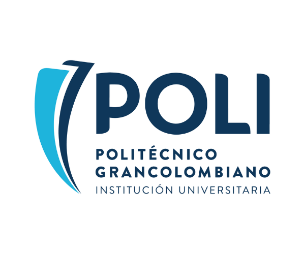
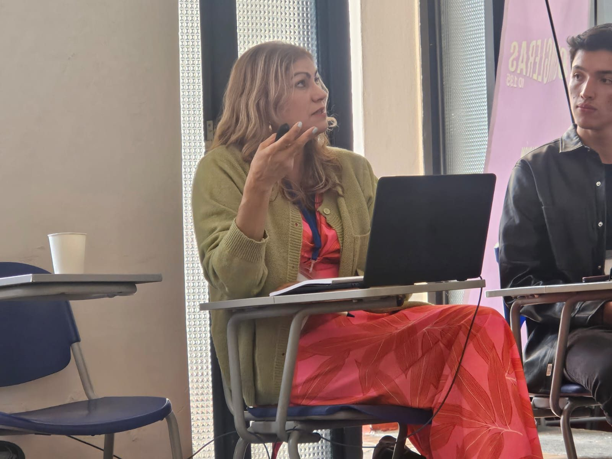
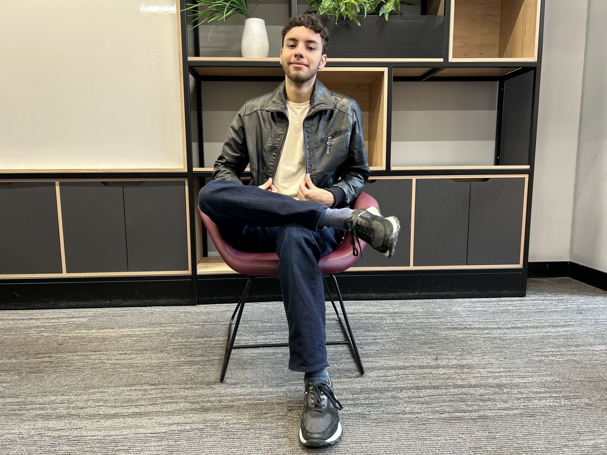
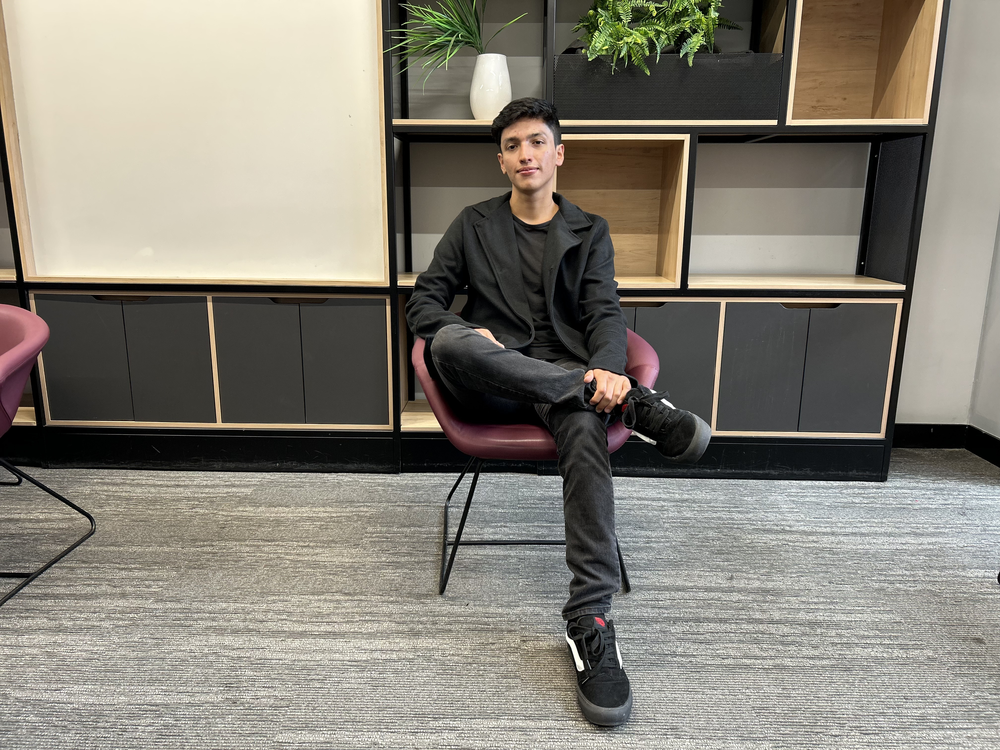
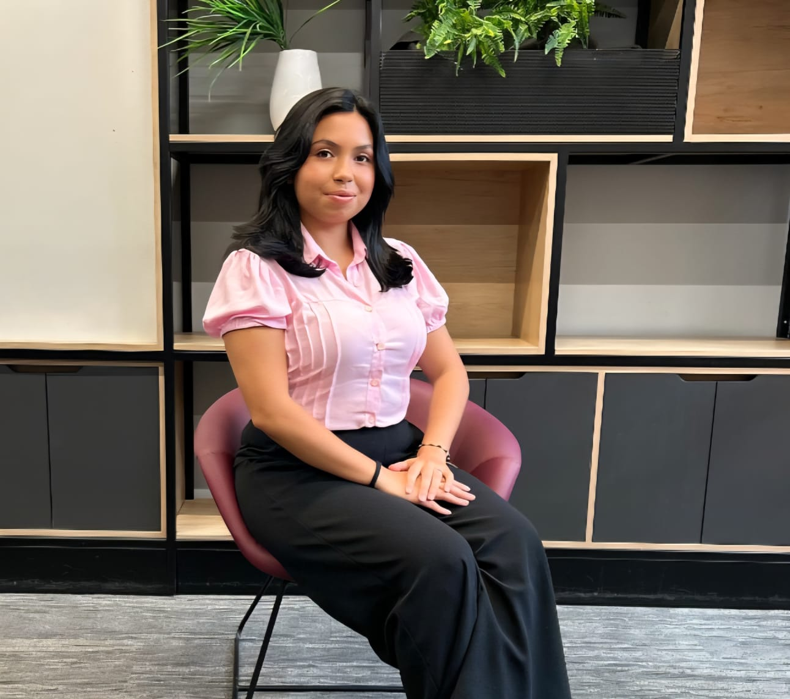

El semillero Comunicación y Prácticas Digitales pertenece al grupo de Investigación Comunicación Estratégica Creativa de la Escuela de Comunicación, Artes Visuales y Digitales del Politécnico Grancolombiano. En este semillero impulsamos la investigación y la innovación en el área de la comunicación digital. Creemos en la formación de profesionales capaces de enfrentar retos actuales con pensamiento crítico y creativo, fomentando la responsabilidad social y el trabajo colaborativo. Actualmente contamos con un equipo comprometido y dinámico con quienes desarrollamos proyectos que impactan la comunidad académica y a la sociedad.
Coordinadora y líder del semillero. Su pasión es guiar a los estudiantes para fortalecer habilidades investigativas y fomentar la curiosidad académica. Cree firmemente en el poder transformador de la educación.


Juan participa activamente explorando la narrativa digital. Su compromiso con el semillero le permite fortalecer habilidades en periodismo, análisis de datos y ética profesional.
Miguel aporta su visión estratégica y creativa. Está motivado por entender cómo los medios influyen en la sociedad y busca generar contenido responsable y de valor.


Andrea combina sus estudios en derecho y comunicación para analizar temas actuales desde múltiples perspectivas. Cree en el periodismo como herramienta de transformación social.